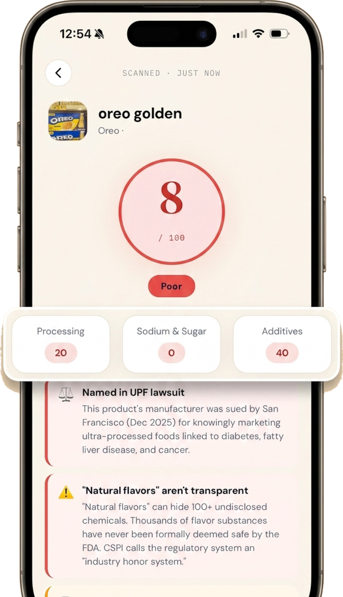
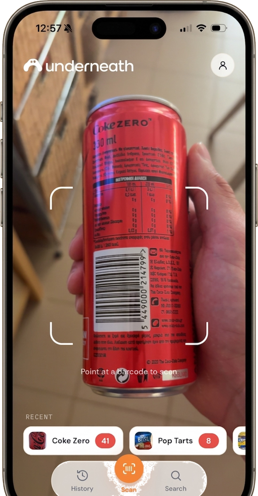
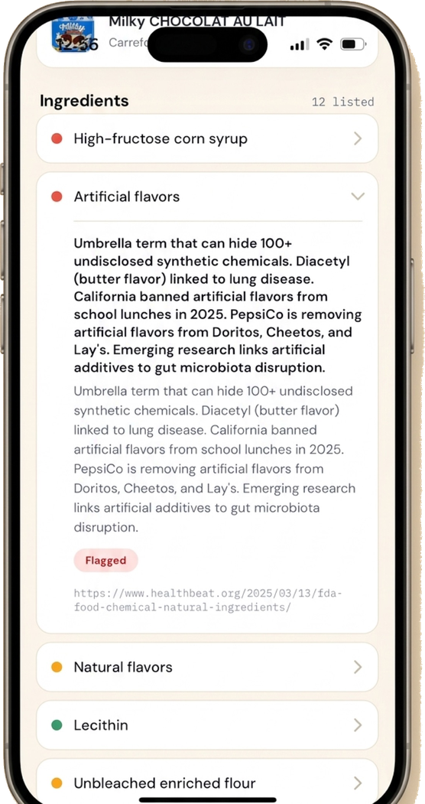
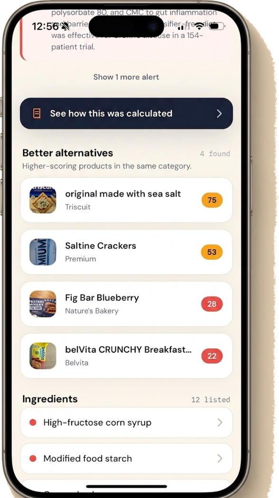

Know what's really in your food
Scan any barcode and get one honest score, 0 to 100, based on how processed a food actually is. Not the health halo on the front of the pack.
Also on Google Play
Also on the App Store
Free to try. Built on the NOVA processing framework and published food science.

See it before you download
This is the whole app: scan, read what is actually inside, then swap.



How it works
Three steps between you and a genuinely informed choice at the shelf.
Scan
Point your camera at any barcode. When a product is missing from the database, Underneath reads the printed ingredient list directly instead.
Score
Every product gets one clear score from 0 to 100. Additives carry the most weight, then the processing level, then the nutrition.
Swap
See cleaner alternatives in the same category, ranked by how they actually score, so you can upgrade what you already buy.
See past the front of the pack
Two toaster pastries, same aisle. The label tells one story. Underneath tells you the rest.
 22 POOR
22 POOR
 81 GOOD
81 GOOD
Same category, very different reality. Underneath surfaces the swap for you.


The food changed. The labels did not keep up.
Everyday staples that used to be a handful of ingredients are now built from additives, refined starches and industrial processing. The packaging still looks wholesome.
Underneath reads what is actually in the modern version and tells you, in one honest number, how far it has drifted from real food, so the choice is yours to make with the full picture.
Before you download
Is Underneath free?
You can try it free. After the trial, Underneath is a paid subscription. That is deliberate: there are no ads and no brand can pay to move its score, so the only thing the app answers to is you.
Will it recognise the products I actually buy?
Underneath looks up barcodes in a global food database that covers most packaged products. If yours is missing, point the camera at the ingredient list and the app will read and score it from the label itself.
What does the score actually mean?
One number from 0 to 100, weighted toward processing. Additives carry the most weight, then how processed the food is on the NOVA scale, then the nutrition. A high score means the food is close to its whole form, not that it is low calorie.
Does it work outside the US?
Yes. The underlying database is global and community maintained, so coverage is strongest for packaged food in Europe and North America and keeps improving elsewhere. The label reader works anywhere, in any language it can see.
Which phones does it run on?
iPhone on iOS 16.4 or later, and Android phones on Android 7.0 or later.
Scan your first product tonight
Take it to the cupboard you think is healthy. That is usually where it gets interesting.
Also on Google Play
Also on the App Store
Requires iOS 16.4 or later, or Android 7.0 or later.
About Underneath
Underneath is built by a small independent team who were tired of reading the front of a package one way and the ingredient list another. We think the true processing level of everyday food should be readable in seconds by anyone, standing in any aisle.
Our scoring is grounded in the NOVA processing classification and published research on additives and ultra-processed food. We do not sell your data and we do not take money to move a product up a score.
Questions, feedback or press? Email us at tryunderneath@gmail.com.
Company details
- Legal name
- Underneath Ltd
- Company no.
- 17312263
- Registered
- England and Wales
- Office
- 128 City Road, London, EC1V 2NX, United Kingdom
- Contact
- tryunderneath@gmail.com